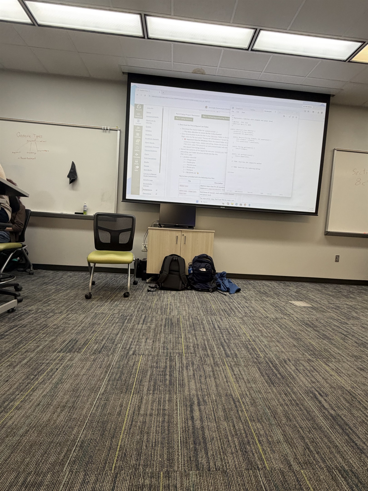

About
About ITIS 3135
This page is built in part to demonstrate work for UNC Charlotte’s ITIS3135 - Front-End Web Application Development class in sections run by Mr. von Briesen. Additional information can be found on the ITIS3135 course website.
This course seeks to provide students relevant experience in front-end web application development by building multiple websites using a variety of tools and techniques.

Tools Used in the Course
- VS Code
- Emmet within VS Code
- SFTP via FileZilla
- Git via GitHub Desktop and GitHub.com
- Various browser tools
- The Accumulus Validator
Sites Built in the Course
- A personal home portfolio
- This course site
- A design firm site representing a fictitious or aspirational design/consulting firm for the student and named after them
- A Crappy Page intended to demonstrate poor web design practices so they can be avoided elsewhere
- A whimsical product company
- A student, colleague, or peer management tool
- A client project website